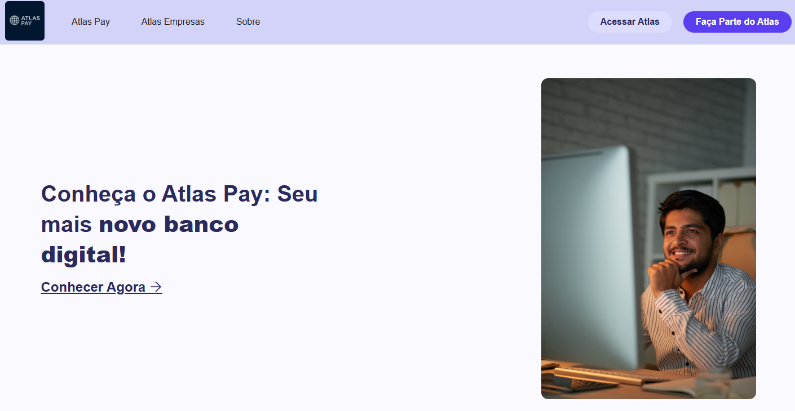
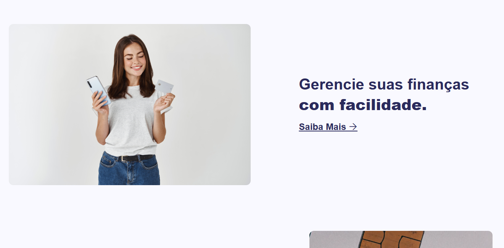
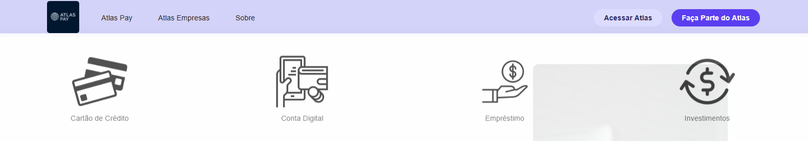
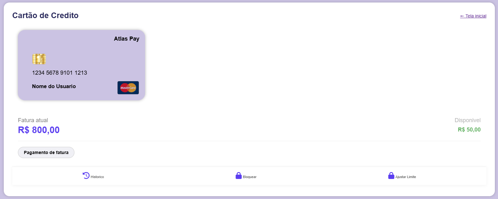
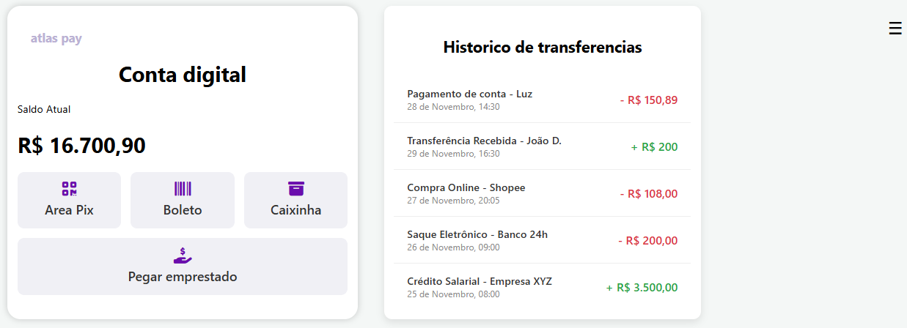
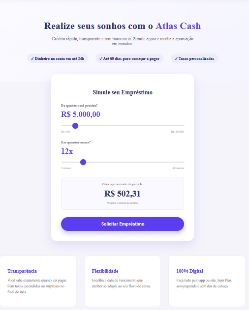
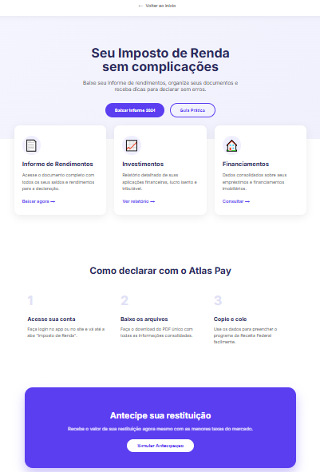
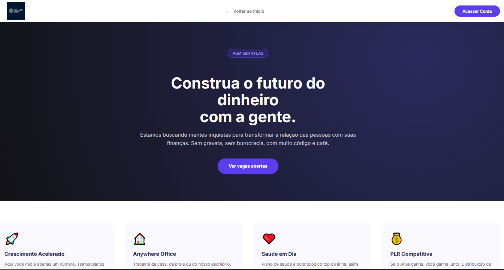
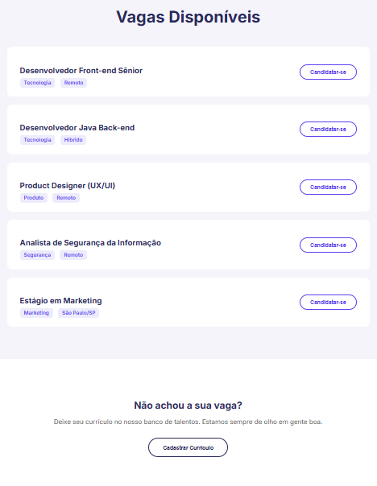
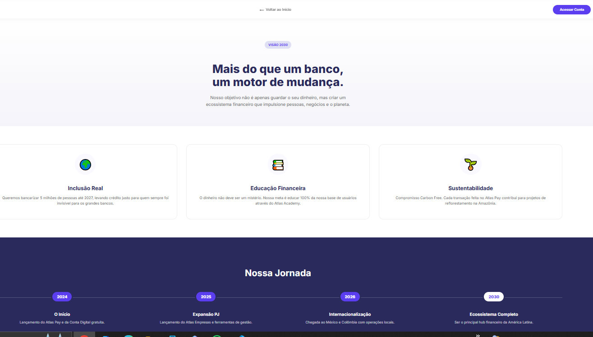

1. Introdução ao Atlas Pay

Esta é a tela inicial do Atlas Pay, o novo banco digital que oferece uma experiência financeira moderna e acessível. Queriamos focar em um design limpo e focado na usabilidade.
2. Gerenciamento de Finanças com Facilidade

Com uma interface intuitiva, os usuários podem controlar suas finanças de forma ágil e eficiente, tendo uma visão clara de suas movimentações.
3. Serviços Principais e Abertura de Conta

Aqui apresentamos os principais serviços oferecidos pelo Atlas Pay, como Cartão de Crédito, Conta Digital, Empréstimo e Investimentos.
4. Detalhes do Cartão de Crédito

A tela do Cartão de Crédito que foi uma das minhas contribuições oferece ao usuário controle total sobre seu cartão. É possível visualizar a fatura atual, o limite disponível e acessar funcionalidades importantes como histórico de transações, bloqueio do cartão e ajuste de limite e etc.
5. Visão Geral da Conta Digital

Não nego que tive algumas dificuldades nessa parte(icones e algumas parte do que seria o histórico de transferência), mas no final deu certo. Exibindo o saldo atual e oferecendo acesso a funcionalidades essenciais como Área Pix, emissão de Boletos e a funcionalidade de Caixinha para organização financeira.
6. Simulador de Empréstimo Atlas Cash

Clicando na opção anterior "Pegar emprestado" os usuários podem simular e solicitar empréstimos de forma rápida e transparente. Esta página demonstra a facilidade de ajustar valores e parcelas, com informações claras sobre as condições.
7. Imposto de Renda sem Complicações

Para facilitar a vida do usuário, o Atlas Pay oferece ferramentas para simplificar a declaração do Imposto de Renda. Aqui, é possível baixar informes de rendimentos, consultar investimentos e financiamentos, e seguir um passo a passo para declarar sem erros.
9. Trabalhe Conosco: Construa o Futuro

A página "Trabalhe Conosco" convida talentos a fazerem parte da equipe. Ela destaca a cultura da empresa, os benefícios e a missão de construir o futuro do dinheiro, atraindo profissionais que buscam inovação e impacto.
10. Vagas Disponíveis

Nesta seção, são listadas o que seria as vagas abertas. Há também a opção para o usuário cadastrar seu currículo, mesmo que não encontre uma vaga específica.
11. Nossa Jornada e Visão de Futuro

A seção "Nossa Jornada" apresenta a linha do tempo da Atlas Pay, desde seu início em 2024 até a visão de um ecossistema financeiro completo em 2030. Destaca os pilares de Inclusão Real, Educação Financeira e Sustentabilidade, mostrando o compromisso da empresa com o futuro.